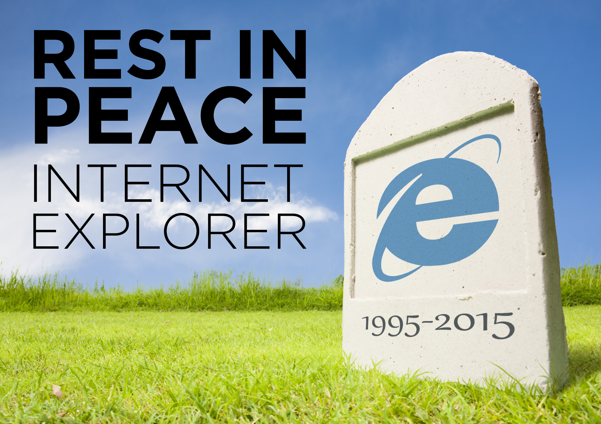
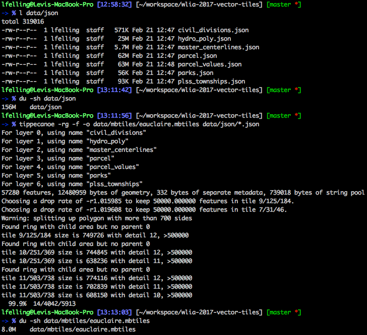
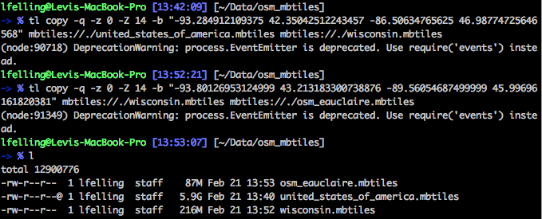
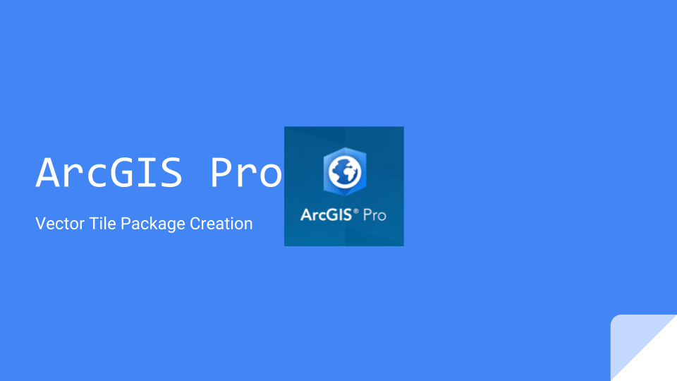

Vector Tiles
Emergent Technology for Web Mapping
Historical Context
Tiles
many little images load faster than one big image
browser cache
Slippy Map
2005 Google Map launch
Layers
Base Layers
Overlay/Operational Layers
geojson, feature layer, UTFGrid
How are Vector Tiles different?
.pbf compressed, vector and feature data, rendered by client (browser or mobile app)
How we got here
webgl, google maps

IE6-10
Vector Tile Advantages
Layers base = overlay
no fixed scale levels
increased performance
reduce bandwidth
reduce storage
dynamic rendering
speed of processing
3d
Limitations
wgs84
vector only
generalization artifacts (potentially)
feature density, size limit
3d, extrusion of polygons but not ideal for contours
Creating Vector Tiles

156MB raw data reduced to 8MB vector tiles, 95% reduction in size
67 seconds to completely rebuild the vector tile cache
57,280 features
clipping mbtiles

ESRI

Hosting Vector Tiles
Mapbox free - 50k map views or 50k mobile users / month, 5.0 GB storage | 20 styles
Heroku free - hobby tier, one dyno, 512 MB Ram, 300MB max slug size
Examples
use chrome dev tools and zoom out from
http://demo.tileserver.org/styles/positron/?raster#20/44.81196/-451.50331
http://demo.tileserver.org/styles/positron/?vector#20/44.81196/-451.50331
~3MB vector, ~12MB Raster
Resources
https://www.mapbox.com/mapbox-gl-js
https://github.com/mapbox/awesome-vector-tiles
https://developers.arcgis.com/javascript
https://openmaptiles.org/
https://github.com/klokantech/tileserver-gl
Thank You!
http://adc4gis.com/
https://github.com/levifelling/wlia-2017-vector-tiles
https://wlia-2017-vector-tiles.herokuapp.com/
 Tiles many little images load faster than one big image
Tiles many little images load faster than one big image
 Slippy Map
Slippy Map